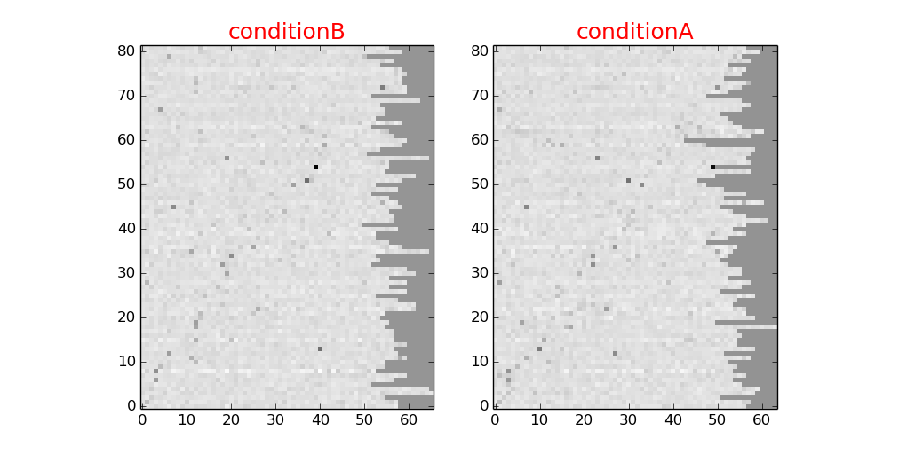

Matrix plot¶
A matrix plot can be used to compare scores of different experiments with eachother. It is also usefull to display correlations. If the scores contain labels compared to other labels each comparison resulting in one score, then the plot will show a correlation plot. If labels are compared to multiple instances of other labels, each resulting in groups of scores, then these groups are averages. To differentiate between experiments the meta value field of the data file is used.
Matrices can be combined in one plot. Example:

This plot shows 6 conditions where the overall score changes from condition to condition. The first 3 labels correspond to the top row of matrices (from left to right), the next 3 with the bottom row. If the number of conditions allows it, the plots can be combined into one plot as in the example above. But it is possible to plot them all next to eachother or above oneanother. If the vertical dimension of each matrix exceeds the horizontal dimension they will be drawn next to each other, otherwise they will be drawn in a vertical bar. To achieve this, set combineMatrices to False in bioplot.cfg:
[matrix]
combineMatrices = False
If you want to see some labels in the plot, add the following to bioplot.cfg:
[matrix]
showLabels = True
labelAngle = 70

The matrices above contain artifical data. In real experiments not all labels may have the same number of scores. This may be due to data shortage, a model not being computed etc. In that case bioplot will accept the scores that exist and plot as many as possible. This is visible in the matrices below. On the right hand side data that is missing is replaced by some average value. The scaling of the grey values is not influenced by these values.
